Variable importance plots: an introduction to vip
Brandon M. Greenwell and Bradley C. Boehmke
2018-08-26
Source:vignettes/vip.Rmd
vip.RmdIn the era of “big data”, it is becoming more of a challenge to not only build state-of-the-art predictive models, but also gain an understanding of what’s really going on in the data. For example, it is often of interest to know which, if any, of the predictors in a fitted model are relatively influential on the predicted outcome. Some modern algorithms—like random forests and gradient boosted decision trees—have a natural way of quantifying the importance or relative influence of each feature. Other algorithms—like naive Bayes classifiers and support vector machines—are not capable of doing so and model-agnostic approaches are generally used to measure each predictor’s importance. Enter vip, an R package for constructing variable importance (VI) scores/plots for many types of supervised learning algorithms using model-based and novel model-agnostic approaches.
Example usage
For illustration, we use one of the regression problems described in Friedman (1991) and Breiman (1996). These data are available in the mlbench package. The inputs consist of 10 independent variables uniformly distributed on the interval \(\left[0, 1\right]\); however, only 5 out of these 10 are actually used in the true model. Outputs are created according to the formula described in ?mlbench::mlbench.friedman1. The code chunk below simulates 500 observations from the model default standard deviation.
# Simulate training data
set.seed(101) # for reproducibility
trn <- as.data.frame(mlbench::mlbench.friedman1(500)) # ?mlbench.friedman1
# Inspect data
tibble::as.tibble(trn)
#> # A tibble: 500 x 11
#> x.1 x.2 x.3 x.4 x.5 x.6 x.7 x.8 x.9 x.10 y
#> <dbl> <dbl> <dbl> <dbl> <dbl> <dbl> <dbl> <dbl> <dbl> <dbl> <dbl>
#> 1 0.372 0.406 0.102 0.322 0.693 0.758 0.518 0.530 0.878 0.763 14.9
#> 2 0.0438 0.602 0.602 0.999 0.776 0.533 0.509 0.487 0.118 0.176 15.3
#> 3 0.710 0.362 0.254 0.548 0.0180 0.765 0.715 0.844 0.334 0.118 15.1
#> 4 0.658 0.291 0.542 0.327 0.230 0.301 0.177 0.346 0.474 0.283 10.7
#> 5 0.250 0.794 0.383 0.947 0.462 0.00487 0.270 0.114 0.489 0.311 17.6
#> 6 0.300 0.701 0.992 0.386 0.666 0.198 0.924 0.775 0.736 0.974 18.3
#> 7 0.585 0.365 0.283 0.488 0.845 0.466 0.715 0.202 0.905 0.640 14.6
#> 8 0.333 0.552 0.858 0.509 0.697 0.388 0.260 0.355 0.517 0.165 17.0
#> 9 0.622 0.118 0.490 0.390 0.468 0.360 0.572 0.891 0.682 0.717 8.54
#> 10 0.546 0.150 0.476 0.706 0.829 0.373 0.192 0.873 0.456 0.694 15.0
#> # ... with 490 more rowsModel-based VI scores
Some machine learning algorithms have their own way of quantifying variable Importance. We describe some of these in the subsection that follow. The issue with model-specific VI scores is that they are not necessarily comparable across different types of models. For example, directly computing the impurity-based VI scores from tree-based models to the \(t\)-statistic from linear models.
Trees and tree ensembles
Decision trees probably offer the most natural model-based approach to quantifying the importance of each feature. In a binary decision tree, at each node \(t\), a single predictor is used to partition the data into two homogeneous groups. The chosen predictor is the one that maximizes some measure of improvement \(\widehat{i}_t\). The relative importance of predictor \(x\) is the sum of the squared improvements over all internal nodes of the tree for which \(x\) was chosen as the partitioning variable; see Breiman, Friedman, and Charles J. Stone (1984) for details. This idea also extends to ensembles of decision trees, such as RFs and GBMs. In ensembles, the improvement score for each predictor is averaged across all the trees in the ensemble. Fortunately, due to the stabilizing effect of averaging, the improvement-based VI metric is often more reliable in large ensembles (see Hastie, Tibshirani, and Friedman 2009, pg. 368). RFs offer an additional method for computing VI scores. The idea is to use the leftover out-of-bag (OOB) data to construct validation-set errors for each tree. Then, each predictor is randomly shuffled in the OOB data and the error is computed again. The idea is that if variable \(x\) is important, then the validation error will go up when \(x\) is perturbed in the OOB data. The difference in the two errors is recorded for the OOB data then averaged across all trees in the forest.
To illustrate, we fit a CART-like regression tree, RF, and GBM to the simulated training data. (Note: there are a number of different packages available for fitting these types of models, we just picked popular and efficient implementations for illustration.)
# Load required packages
library(xgboost) # for fitting GBMs
library(ranger) # for fitting random forests
library(rpart) # for fitting CART-like decision trees
# Fit a single regression tree
tree <- rpart(y ~ ., data = trn)
# Fit a random forest
set.seed(101)
rfo <- ranger(y ~ ., data = trn, importance = "impurity")
# Fit a GBM
set.seed(102)
bst <- xgboost(
data = data.matrix(subset(trn, select = -y)),
label = trn$y,
objective = "reg:linear",
nrounds = 100,
max_depth = 5,
eta = 0.3,
verbose = 0 # suppress printing
)Each of the above packages include the ability to compute VI scores for all the features in the model; however, the implementation is rather package specific, as shown in the code chunk below.
# VI plot for single regression tree
(vi_tree <- tree$variable.importance)
#> x.4 x.2 x.1 x.5 x.3 x.6 x.7
#> 4233.8443 2512.6610 2461.1746 1229.9290 687.9090 533.1549 356.8836
#> x.9 x.8 x.10
#> 330.6542 275.6148 274.5077
barplot(vi_tree, horiz = TRUE, las = 1)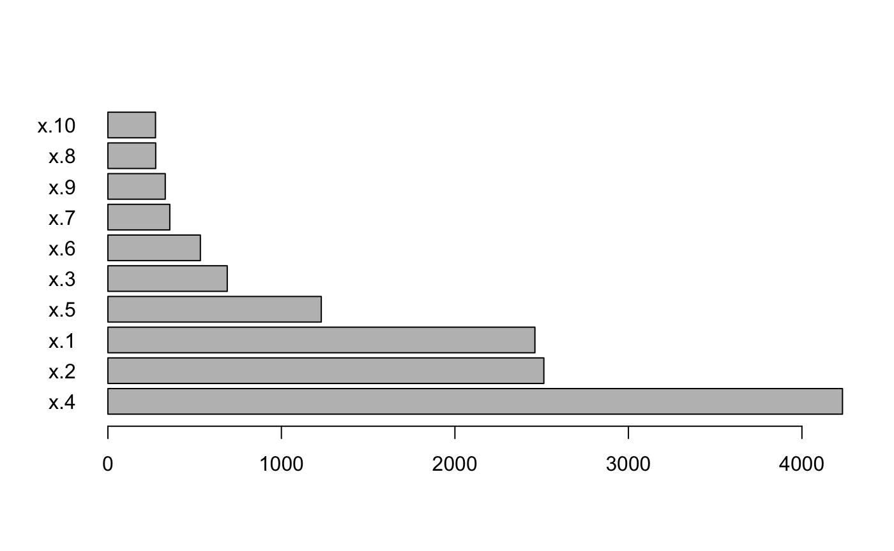
# VI plot for RF
(vi_rfo <- rfo$variable.importance)
#> x.1 x.2 x.3 x.4 x.5 x.6 x.7
#> 2069.0548 2421.4997 951.0145 3784.6753 1496.1794 364.5990 364.6499
#> x.8 x.9 x.10
#> 366.6599 337.7340 386.6057
barplot(vi_rfo, horiz = TRUE, las = 1)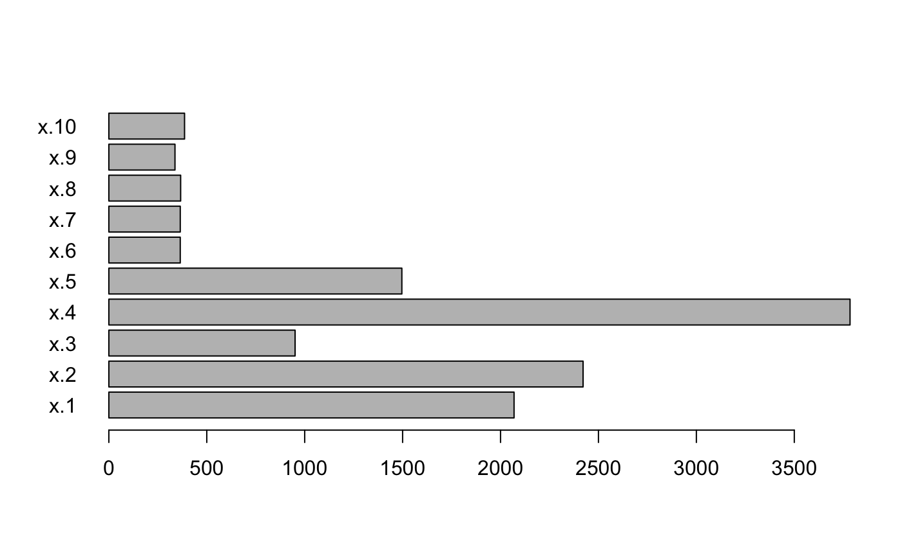
# VI plot for GMB
(vi_bst <- xgb.importance(model = bst))
#> Feature Gain Cover Frequency
#> 1: x.4 0.403044695 0.12713681 0.10149673
#> 2: x.2 0.224976755 0.10504115 0.13610851
#> 3: x.1 0.188540934 0.10597358 0.17633302
#> 4: x.5 0.089410524 0.07012969 0.07904584
#> 5: x.3 0.068165825 0.10009244 0.10243218
#> 6: x.9 0.008023691 0.07802100 0.07062675
#> 7: x.6 0.007456234 0.13405129 0.10243218
#> 8: x.7 0.003997672 0.08678822 0.07764266
#> 9: x.10 0.003766492 0.11868040 0.08325538
#> 10: x.8 0.002617178 0.07408544 0.07062675
xgb.ggplot.importance(vi_bst)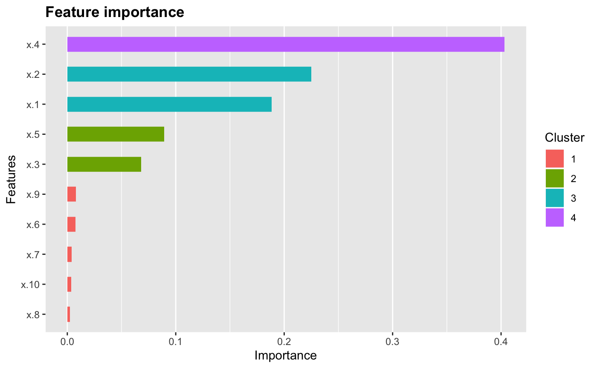
As we would expect, all three methods rank the variables x.1–x.5 as more important than the others. While this is good news, it is unfortunate that we have to remember the different functions and ways of extracting and plotting VI scores from various model fitting functions. This is where vip can help…one function to rule them all! Once vip is loaded, we can use vi() to extract a tibble of VI scores.
# Load required packages
library(vip)
#>
#> Attaching package: 'vip'
#> The following object is masked from 'package:utils':
#>
#> vi
# Extract (tibble of) VI scores
vi(tree) # CART-like decision tree
#> # A tibble: 10 x 2
#> Variable Importance
#> <chr> <dbl>
#> 1 x.4 4234.
#> 2 x.2 2513.
#> 3 x.1 2461.
#> 4 x.5 1230.
#> 5 x.3 688.
#> 6 x.6 533.
#> 7 x.7 357.
#> 8 x.9 331.
#> 9 x.8 276.
#> 10 x.10 275.
vi(rfo) # RF
#> # A tibble: 10 x 2
#> Variable Importance
#> <chr> <dbl>
#> 1 x.4 3785.
#> 2 x.2 2421.
#> 3 x.1 2069.
#> 4 x.5 1496.
#> 5 x.3 951.
#> 6 x.10 387.
#> 7 x.8 367.
#> 8 x.7 365.
#> 9 x.6 365.
#> 10 x.9 338.
vi(bst) # GBM
#> # A tibble: 10 x 2
#> Variable Importance
#> <chr> <dbl>
#> 1 x.4 0.403
#> 2 x.2 0.225
#> 3 x.1 0.189
#> 4 x.5 0.0894
#> 5 x.3 0.0682
#> 6 x.9 0.00802
#> 7 x.6 0.00746
#> 8 x.7 0.00400
#> 9 x.10 0.00377
#> 10 x.8 0.00262Notice how the vi() function always returns a tibble with two columns: Variable and Importance1. Also, by default, vi() always orders the VI scores from highest to lowest; this, among other options, can be controlled by the user (see ?vip::vi for details). Plotting VI scores with vip is just as straightforward.
# Load required packages
library(vip)
# Construct ggplot2-based VIPs
(p1 <- vip(tree)) # CART-like decision tree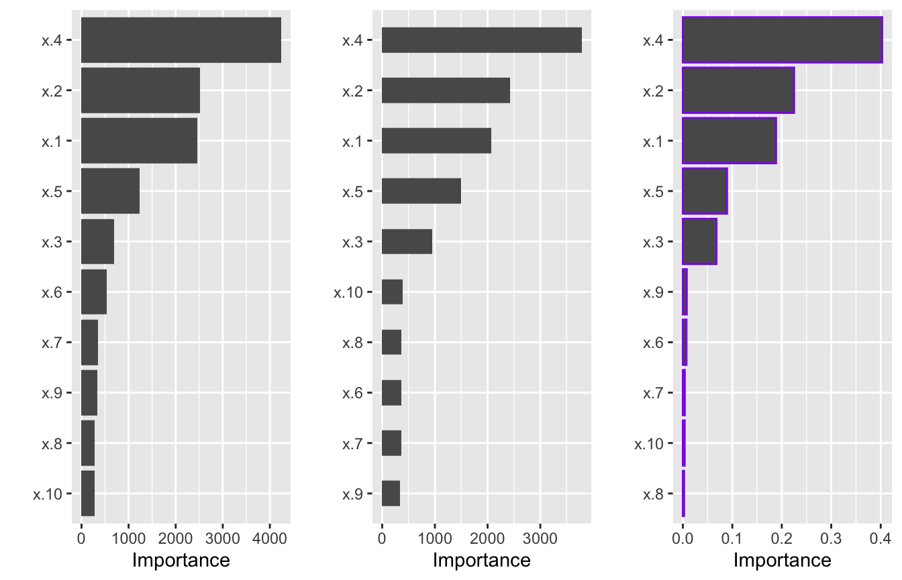
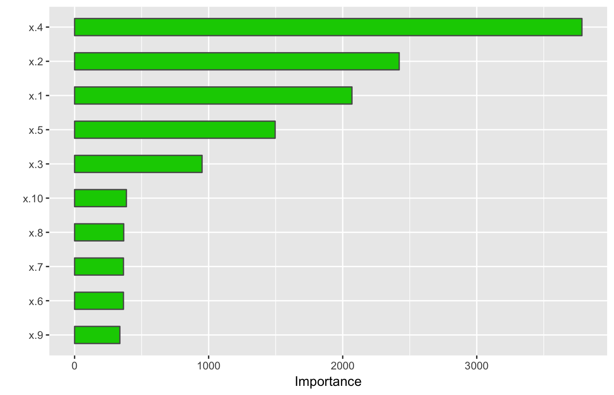

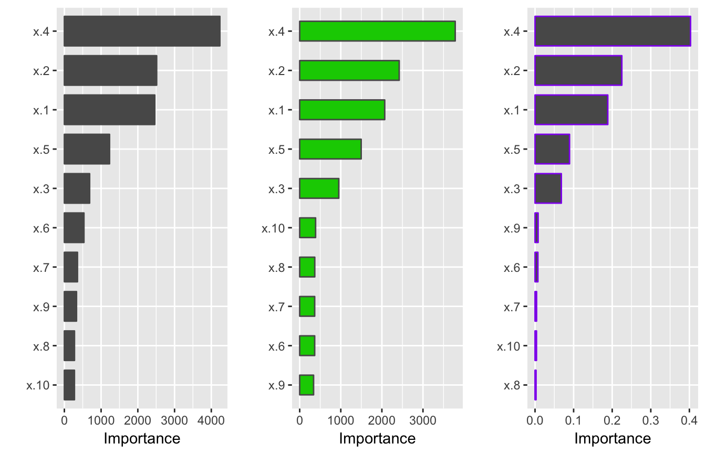
Notice how the vip() function always returns a "ggplot" object (by default, this will be a bar plot). For large models with many features, a dot plot is more effective (in fact, a number of useful plotting options can be fiddles with).
library(ggplot2) # for theme_light() function
vip(bst, num_features = 5, bar = FALSE, color, horizontal = FALSE,
color = "red", shape = 17, size = 4) +
theme_light()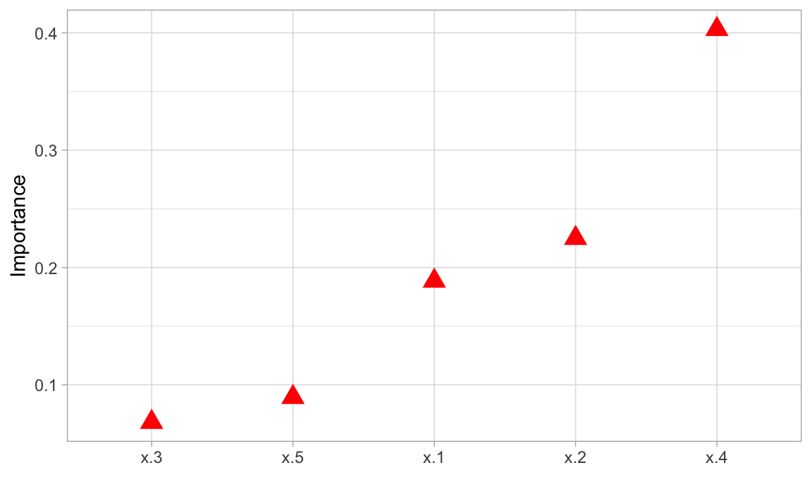
Linear models
In multiple linear regression, or linear models (LMs), the absolute value of the \(t\)-statistic is commonly used as a measure of VI. The same idea also extends to generalized linear models (GLMs). In the code chunk below, we fit an LM to the simulated trn data set allowing for all main and two-way interaction effects, then use the step() function to perform backward elimination.
# Fit a LM
linmod <- lm(y ~ .^2, data = trn)
backward <- step(linmod, direction = "backward", trace = 0)
# Extract VI scores
vi(backward)
#> # A tibble: 21 x 3
#> Variable Importance Sign
#> <chr> <dbl> <chr>
#> 1 x.4 14.2 POS
#> 2 x.2 7.31 POS
#> 3 x.1 5.63 POS
#> 4 x.5 5.21 POS
#> 5 x.3:x.5 2.46 POS
#> 6 x.1:x.10 2.41 NEG
#> 7 x.2:x.6 2.41 NEG
#> 8 x.1:x.5 2.37 NEG
#> 9 x.10 2.21 POS
#> 10 x.3:x.4 2.01 NEG
#> # ... with 11 more rows
# Plot VI scores
vip(backward, num_features = length(coef(backward)),
bar = FALSE, horizontal = FALSE)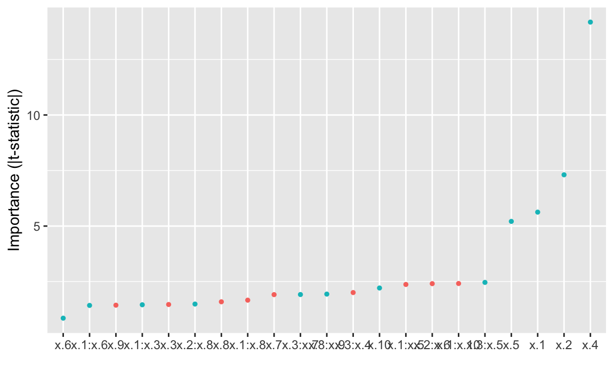
One issue with computing VI scores for LMs using the \(t\)-statistic approach is that a score is assigned to each term in the model, rather than to just each feature! We can solve this problem using one of the model-agnostic approaches discussed later.
Multivariate adaptive regression splines (MARS), which were introduced in Friedman (1991), is an automatic regression technique which can be seen as a generalization of multiple linear regression and generalized linear models. In the MARS algorithm, the contribution (or VI score) for each predictor is determined using a generalized cross-validation (GCV) statistic. An example using the earth package is given below:
# Load required packages
library(earth)
#> Loading required package: plotmo
#> Loading required package: plotrix
#> Loading required package: TeachingDemos
# Fit a MARS model
mars <- earth(y ~ ., data = trn, degree = 2, pmethod = "exhaustive")
# Extract VI scores
vi(mars)
#> # A tibble: 10 x 2
#> Variable Importance
#> <chr> <dbl>
#> 1 x.4 100
#> 2 x.1 83.2
#> 3 x.2 83.2
#> 4 x.5 59.3
#> 5 x.3 43.5
#> 6 x.6 0
#> 7 x.7 0
#> 8 x.8 0
#> 9 x.9 0
#> 10 x.10 0
# Plot VI scores
vip(mars)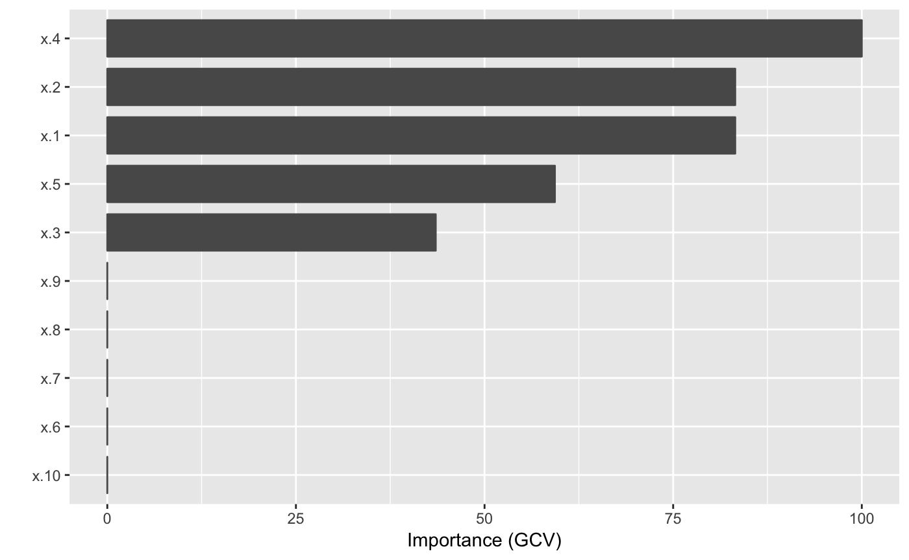
Neural networks
For NNs, two popular methods for constructing VI scores are the Garson algorithm (Garson 1991), later modified by Goh (1995), and the Olden algorithm (Olden, Joy, and Death 2004). For both algorithms, the basis of these importance scores is the network’s connection weights. The Garson algorithm determines VI by identifying all weighted connections between the nodes of interest. Olden’s algorithm, on the other hand, uses the product of the raw connection weights between each input and output neuron and sums the product across all hidden neurons. This has been shown to outperform the Garson method in various simulations. For DNNs, a similar method due to Gedeon (1997) considers the weights connecting the input features to the first two hidden layers (for simplicity and speed); but this method can be slow for large networks.
These methods will be implemented in vip soon!
# # Tune a neural network
# library(caret)
# set.seed(0755)
# nn <- train(
# x = subset(trn, select = -y),
# y = trn$y,
# method = "nnet",
# trace = FALSE,
# linout = TRUE,
# maxit = 1000,
# trControl = trainControl(method = "repeatedcv", number = 5, repeats = 5),
# tuneGrid = expand.grid(size = 1:20, decay = c(0, 0.0001, 0.001, 0.01, 0.1))
# )
#
# # Plot tuning results
# ggplot(nn)
# Load required packages
library(nnet)
# Fit a neural network
set.seed(0803)
nn <- nnet(y ~ ., data = trn, size = 7, decay = 0.1, linout = TRUE)
#> # weights: 85
#> initial value 126298.176281
#> iter 10 value 5148.185025
#> iter 20 value 3563.828062
#> iter 30 value 3095.876922
#> iter 40 value 2638.672528
#> iter 50 value 1983.009001
#> iter 60 value 1759.428911
#> iter 70 value 1483.284575
#> iter 80 value 1112.219052
#> iter 90 value 835.941067
#> iter 100 value 748.120719
#> final value 748.120719
#> stopped after 100 iterationsModel-agnostic VI scores
Model-agnostic interpredibility separates interpretation from the model. Compared to model-specific approaches, model-agnostic VI methods are more flexible (since they can be applied to any supervised learning algorithm). In this section, we discuss model-agnostic methods for quantifying global feature importance using three different approaches: 1) PDPs, 2) ICE curves, and 3) permutation. For details on approaches 1)–2), see Greenwell, Boehmke, and McCarthy (2018) (or just click here).
PDP method
Our first model-agnostic approach is based on quantifying the “flatness” of the PDPs of each feature. PDPs help visualize the effect of low cardinality subsets of the feature space on the estimated prediction surface (e.g., main effects and two/three-way interaction effects.). PDPs provide model-agnostic interpretations and can be constructed in the same way for any supervised learning algorithm. Below, we fit a projection pursuit regression (PPR) model and construct PDPs for each feature using the pdp package (Greenwell 2017).
# Load required packages
library(pdp)
# Fit a PPR model (nterms was chosen using the caret package with 5 repeats of
# 5-fold cross-validation)
pp <- ppr(y ~ ., data = trn, nterms = 11)
# PDPs for all 10 features
features <- paste0("x.", 1:10)
pdps <- lapply(features, FUN = function(feature) {
pd <- partial(pp, pred.var = feature)
autoplot(pd) +
ylim(range(trn$y)) +
theme_light()
})
grid.arrange(grobs = pdps, ncol = 5)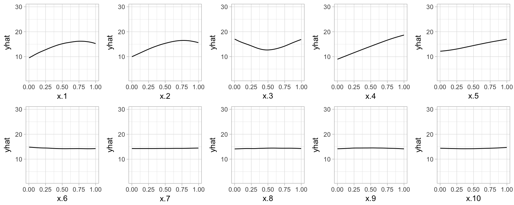
Next, we compute PDP-based VI scores for the PPR and NN models. The PDP method constructs VI scores that quantify the “flatness” of each PDP (by default, this is defined by computing the standard deviation of the \(y\)-axis values for each PDP). To use the PDP method, specify method = "pdp" in the call to vi() or vip().
# Fit a PPR model (nterms was chosen using the caret package with 5 repeats of
# 5-fold cross-validation)
pp <- ppr(y ~ ., data = trn, nterms = 11)
# Plot VI scores
p1 <- vip(pp, method = "pdp") + ggtitle("PPR")
#> Warning: Setting `method = "pdp"` is experimental, use at your own risk!
p2 <- vip(nn, method = "pdp") + ggtitle("NN")
#> Warning: Setting `method = "pdp"` is experimental, use at your own risk!
# Display plots side by side
grid.arrange(p1, p2, ncol = 2)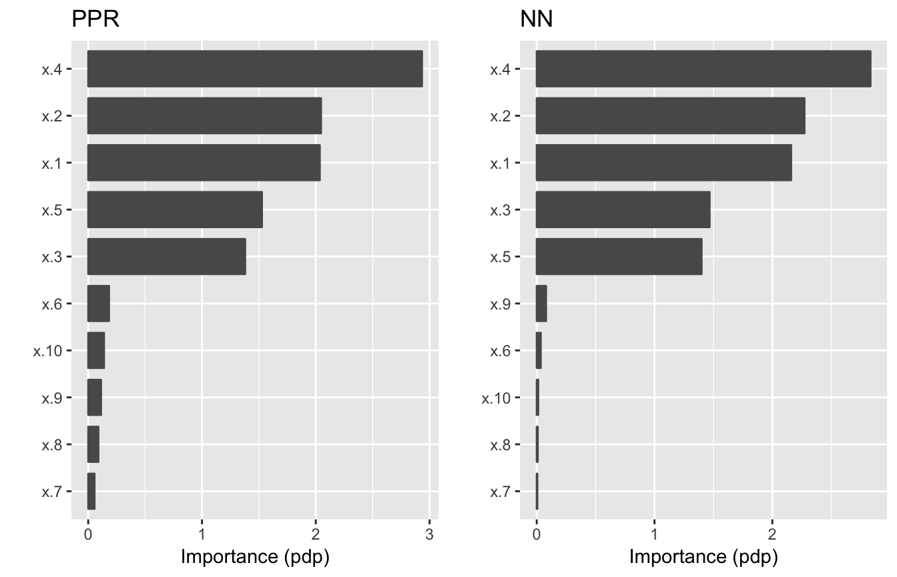
ICE curve method
The ICE curve method is similar to the PDP method. The only difference is that we measure the “flatness” of each ICE curve and then aggregate the results (e.g., by averaging)2. If there are no (substantial) interaction effects, using method = "ice" will produce results similar to using method = "pdp". However, if strong interaction effects are present, they can obfuscate the main effects and render the PDP-based approach less useful (since the PDPs for important features can be relatively flat when certain interactions are present; see Goldstein et al. (2015) for details). In fact, it is probably safest to always use method = "ice".
Below, we display the ICE curves for each feature using the same \(y\)-axis scale. Again, there is a clear difference between the ICE curves for features x.1–x.5 and x.6–x.10; the later being relatively flat by comparison. Also, notice how the ICE curves within each feature are relatively parallel (if the ICE curves within each feature were perfectly parallel, the standard deviation for each curve would be the same and the results will be identical to the PDP method). In this example, the interaction term between x.1 and x.2 does not obfuscate the PDPs for the main effects and the results are not much different. To use the ICE curve method, specify method = "ice" in the call to vi() or vip().
# PDPs for all 10 features
ice_curves <- lapply(features, FUN = function(feature) {
ice <- partial(pp, pred.var = feature, ice = TRUE)
autoplot(ice, alpha = 0.1) +
ylim(range(trn$y)) +
theme_light()
})
grid.arrange(grobs = ice_curves, ncol = 5)
# Plot VI scores
p1 <- vip(pp, method = "ice") + ggtitle("PPR")
#> Warning: Setting `method = "ice"` is experimental, use at your own risk!
p2 <- vip(nn, method = "ice") + ggtitle("NN")
#> Warning: Setting `method = "ice"` is experimental, use at your own risk!
# Display plots side by side
grid.arrange(p1, p2, ncol = 2)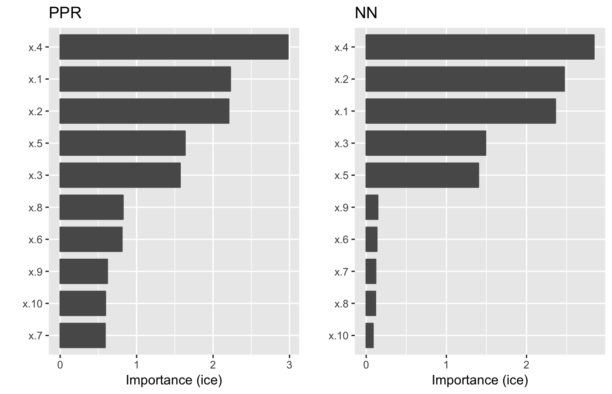
Permutation method
The permutation method exists in various forms and was made popular in Breiman (2001) for random forests. A more general approach to the permutation method is described in Assessing Variable Importance for Predictive Models of Arbitrary Type, an R package vignette by DataRobot. The permutation approach used in vip is quite simple. The idea is that if we randomly permute the values of an important feature in the training data, the training performance would degrade (since permuting the values of a feature effectively destroys any relationship between that feature and the target variable). This of course assumes that the model has been properly tuned (e.g., using cross-validation) and is not over fitting. The permutation approach uses the difference between some baseline performance measure (e.g., training \(R^2\) or RMSE) and the same performance measure obtained after permuting the values of a particular feature in the training data (Note: the model is NOT refit to the training data after randomly permuting the values of a feature). To use the permutation approach, specify method = "permute" in the call to vi() or vip(). Note that using method = "permute" requires specifying a few additional arguments; see ?vi_permute for details.
An example is given below for the previously fitted PPR and NN models.
# Plot VI scores
set.seed(2021) # for reproducibility
p1 <- vip(pp, method = "permute", target = "y", metric = "rsquared",
pred_fun = predict) + ggtitle("PPR")
#> Warning: Setting `method = "permute"` is experimental, use at your own
#> risk!
p2 <- vip(nn, method = "permute", target = "y", metric = "rsquared",
pred_fun = predict) + ggtitle("NN")
#> Warning: Setting `method = "permute"` is experimental, use at your own
#> risk!
grid.arrange(p1, p2, ncol = 2)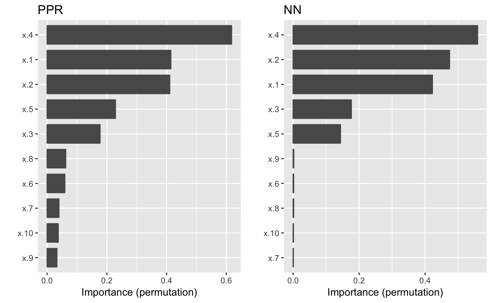
The Pima indians diabetes data
As a final example, we’ll consider the well-known Pima Indians diabetes data; see ?pdp::pima for details. These data contain diabetes test results collected by the the US National Institute of Diabetes and Digestive and Kidney Diseases from a population of women who were at least 21 years old, of Pima Indian heritage, and living near Phoenix, Arizona. The target variable, diabetes, is a factor indicating the diabetes test result (pos/neg). In the code chunk below, we fit a random forest to the Pima Indians data using the fantastic ranger package. Note that we fit two different random forests: rfo1 and rfo2. The only difference is that we would use rfo1 if we wanted predicted class labels and we would use rfo2 for predicted class probabilities. The distinction is important when using method = "permute" since the performance metric being used requires the predicted outcome to be either the class labels (e.g., metric = "error" for classification error) or predicted class labels (e.g., "auc" for area under the curve). We’ll illustrate both below. We should point out that there is more built-in support for "ranger" objects, so it is not necessary to supply pred_fun or specify a specific metric (the default is metric = "auto"), but for completeness, we explicitly specify all the options.
# Load required packages
library(ranger)
# Load the Pima indians diabetes data
data(pima, package = "pdp")
pima <- na.omit(pima) # remove records with missing values
# Fit a random forest
set.seed(1322) # for reproducibility
rfo1 <- ranger(diabetes ~ ., data = pima, importance = "permutation")
rfo2 <- ranger(diabetes ~ ., data = pima, importance = "permutation",
probability = TRUE) # for predicted probabilities
# Plot VI scores
p1 <- vip(rfo1) # model-specific
p2 <- vip(rfo2) # model-specific
set.seed(1329) # for reproducibility
pfun <- function(object, newdata) predict(object, data = newdata)$predictions
p3 <- vip(rfo1, method = "permute", metric = "error", pred_fun = pfun,
target = "diabetes")
#> Warning: Setting `method = "permute"` is experimental, use at your own
#> risk!
p4 <- vip(rfo2, method = "permute", metric = "auc", pred_fun = pfun,
target = "diabetes", reference_class = "neg")
#> Warning: Setting `method = "permute"` is experimental, use at your own
#> risk!
grid.arrange(p1, p2, p3, p4, ncol = 2)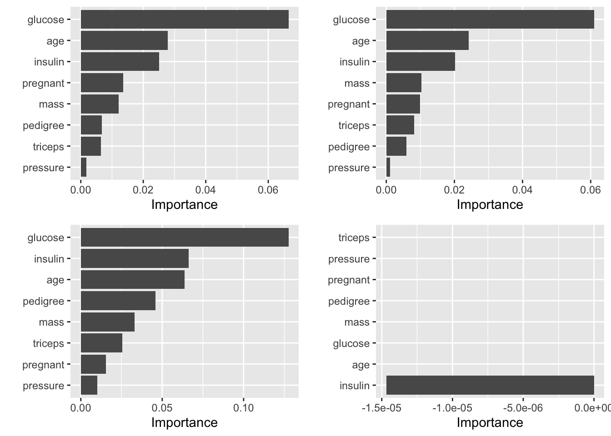
References
Breiman, Leo. 1996. “Bagging Predictors.” Machine Learning 24 (2): 123–40. https://doi.org/10.1023/A:1018054314350.
———. 2001. “Random Forests.” Machine Learning 45 (1): 5–32. https://doi.org/10.1023/A:1010933404324.
Breiman, Leo, Jerome Friedman, and Richard A. Olshen Charles J. Stone. 1984. Classification and Regression Trees. The Wadsworth and Brooks-Cole Statistics-Probability Series. Taylor & Francis.
Friedman, Jerome H. 1991. “Multivariate Adaptive Regression Splines.” The Annals of Statistics 19 (1): 1–67. https://doi.org/10.1214/aos/1176347963.
Garson, David G. 1991. “Interpreting Neural-Network Connection Weights.” Artificial Intelligence Expert 6 (4): 46–51.
Gedeon, T.D. 1997. “Data Mining of Inputs: Analysing Magnitude and Functional Measures.” International Journal of Neural Systems 24 (2): 123–40. https://doi.org/10.1007/s10994-006-6226-1.
Goh, A.T.C. 1995. “Back-Propagation Neural Networks for Modeling Complex Systems.” Artificial Intelligence in Engineering 9 (3): 143–51. https://doi.org/http://dx.doi.org/10.1016/0954-1810(94)00011-S.
Goldstein, Alex, Adam Kapelner, Justin Bleich, and Emil Pitkin. 2015. “Peeking Inside the Black Box: Visualizing Statistical Learning with Plots of Individual Conditional Expectation.” Journal of Computational and Graphical Statistics 24 (1): 44–65. https://doi.org/10.1080/10618600.2014.907095.
Greenwell, Brandon. 2017. Pdp: Partial Dependence Plots. https://CRAN.R-project.org/package=partial.
Greenwell, Brandon M., Bradley C. Boehmke, and Andrew J. McCarthy. 2018. “A Simple and Effective Model-Based Variable Importance Measure.” arXiv Preprint arXiv:1805.04755.
Hastie, Trevor, Robert. Tibshirani, and Jerome Friedman. 2009. The Elements of Statistical Learning: Data Mining, Inference, and Prediction, Second Edition. Springer Series in Statistics. Springer-Verlag.
Olden, Julian D, Michael K Joy, and Russell G Death. 2004. “An Accurate Comparison of Methods for Quantifying Variable Importance in Artificial Neural Networks Using Simulated Data.” Ecological Modelling 178 (3): 389–97. https://doi.org/http://dx.doi.org/10.1016/j.ecolmodel.2004.03.013.
The exception is GLM-like models (e.g., LMs and GLMs), described in the next section, which include an additional column called
Signcontaining the sign of the original coefficients.↩There is also the potential to use the individual ICE curves to quantify feature importance at the observation level, thereby providing local VI scores.↩